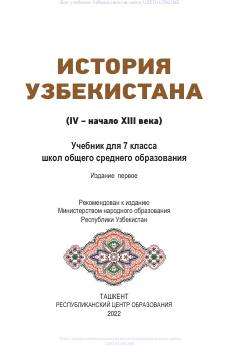

OTO'zbekistonning IV-XIII asrlar tarixiga oid 7-sinf uchun mo'ljallangan o'quv qo'llanma.
Ushbu darslik 7-sinf o'quvchilari uchun mo'ljallangan bo'lib, O'zbekistonning IV asrdan XIII asr boshlarigacha bo'lgan o'rta asrlar tarixini qamrab oladi. Kitobda hududning ijtimoiy-siyosiy, iqtisodiy va madaniy rivojlanishi, shuningdek, buyuk ajdodlarimizning jahon sivilizatsiyasiga qo'shgan hissasi yoritilgan.